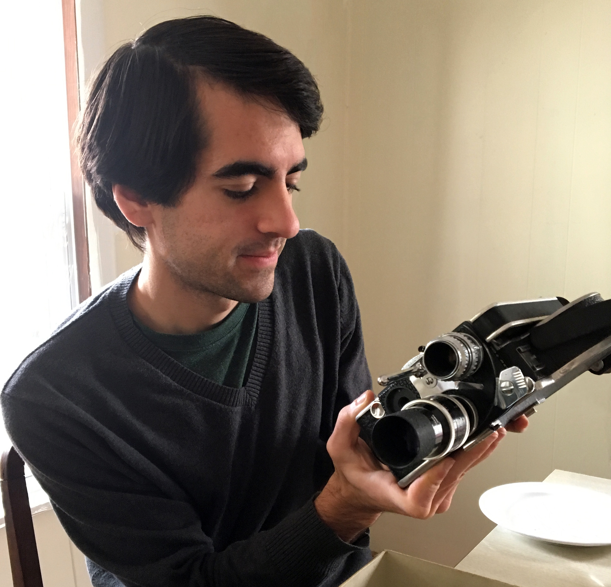

Cinematographer Canon 5DmkIII (Magic Lantern), Canon C100, Canon 60D, Blackmagic, GoPro, Sony, JVC, Panasonic, Nikon, 16mm Bolex, Super 8, Glidecam, digital/analog still photography (35, medium, large format)
Editor/Colorist Adobe Premiere, After Effects, Photoshop, Speedgrade, Final Cut Pro, Avid, DaVinci Resolve
Lighting Designer Arri, Lowel, Kino, ETC for live show and film applications.
Sound Recordist/Mixing Zoom, Tascam, ProTools, Logic, Adobe Audition 5.1 surround and stereo mixes.
Archivist Digital transfer and preservation of archaic media formats (film, VHS, magnetic tape, etc.)
Live Streaming Installing and live switching video, audio, and slideshows for conferences.
Hampshire College (2016)
Bachelor of Arts in Film and Video Production
Kingswood Oxford (2012)
High School Diploma